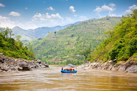

White Water Rafting began on the banks of the Salmon River in Idaho, when a small
group of river guides decided to share the rivers they loved with everyone else.
With two rafts and a borrowed trailer, they ran their first half-day trips for
friends and neighbors.

Today our certified guides lead families, first-timers, and seasoned paddlers on
trips ranging from gentle half-day floats to multi-day canyon expeditions. Safety,
great gear, and a lot of fun are still at the heart of every trip we run.